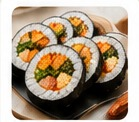
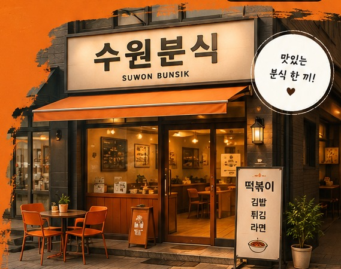

원조김밥
신선한 재료로 든든한 한 줄
1,500원
원하는 방법으로 편리하게 주문해보세요.
바로 전화로 주문하기
031-123-4567네이버에서 간편하게 주문
배민에서 주문하기
요기요에서 주문하기
학습용 주문 페이지
※ 외부 주문 서비스는 가상 매장 계정이 없어 실제 매장 URL을 연결하지 않았습니다. 아래 설정에서 매장별 링크를 입력하면 버튼이 연결됩니다.
따뜻한 한 끼가 생각날 때, 편안하게 들를 수 있는 동네 분식집을 상상하며 만든 웹사이트입니다. 가상의 매장과 메뉴로 홈페이지 제작 과정을 연습해보세요.
아니요. 웹사이트 제작과 GitHub Pages 배포를 연습하기 위한 가상 매장입니다.
script.js의 ORDER_LINKS 설정에 가상 매장에 해당하는 주문 페이지 URL을 입력하면 됩니다. 현재는 링크 연결 예시만 포함되어 있습니다.
아니요. 장바구니와 주문 양식을 연습하는 데모입니다. 실제 주문 접수와 결제를 위해서는 서버와 결제 서비스 연동이 필요합니다.